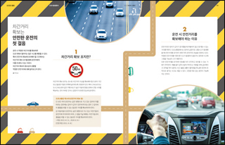
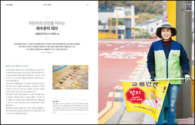
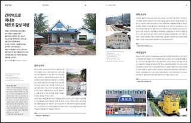
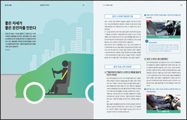
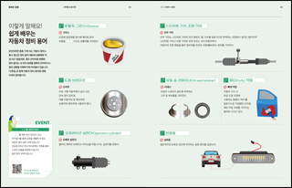

신호등 독자마당
매호 「신호등」을 읽고 느낀 점을 독자 엽서로 보내주세요.
소중한 의견을 보내주신 분 중 추첨을 통해 소정의 상품을 보내 드립니다.

이번 호 도로 사용 설명서가 가장 많이 도움 됐습니다. 대충 알고 있던 차간거리에 대해 정확하게 알게 되었고 안전거리의 중요성을 다시 한번 일깨워주었습니다.
전혜정(부산 기장군)

아이들의 도보 통학을 지키는 든든한 파수꾼, 보행 안전지도사 오재숙 님의 인터뷰를 잘 읽었습니다. 어린이들의 특성을 파악해 지도할 뿐만 아니라 학교 앞 교통안전을 위해 다방면으로 고민하는 모습이 인상깊고, 참 멋진 분이라는 생각이 들었습니다.
김은미(경북 경산시)

마침 초등학교 졸업을 앞둔 큰아이와 방학을 맞아 특별한 추억여행을 떠나고 싶다는 계획이 있었는데, ‘간이역으로 떠나는 레트로 감성 여행’ 정보가 딱 맞았어요! 사춘기를 맞은 아이들과 요즘 이런저런 마찰이 있었는데 둘만의 오붓한 여행으로 그동안 나누지 못한 이야기를 하면서 아이의 새로운 출발을 힘차게 응원해주는 부모가 되려고 합니다.
최은순(인천 연수구)

이번 호 내용을 보고 많은 반성을 했답니다. 그동안 저 역시 운전할 때 허리에 통증을 느끼며 불편함을 많이 느끼곤 했는데, 운전 자세가 좋지 않아서 발생한다는 내용에 많이 공감합니다. 앞으로는 운전 자세에 신경 쓰도록 해야겠습니다.
박성목(경기 김포시)

자동차 정비 용어를 꾸준히 보다 보니 서비스 센터에 가서도 알아들을 수 있게 됐습니다. 앞으로 이런 용어를 더 공부하고 싶네요. 자동차에 대해 알게 되니 애정도 더 갖게 되는 것 같아요. 우리말 도로 사전 코너가 앞으로도 계속 이어졌으면 좋겠습니다.
정창재(경기 용인시)
이 밖에 「신호등」에 바라는 다양한 독자의견을 hongbo@koroad.or.kr로 보내주세요.

정답은 2023년 「신호등」 1+2월호에 숨어 있습니다.

이번 호 「신호등」의 주제는 ‘노란색’입니다. 다음 중 주의와 배려를 필요로 하는 노란색이 아닌 것은 무엇일까요?
- ① 옐로카펫
- ② 황색신호
- ③ 노란 자동차
- ④ 과속방턱지
일교차가 심한 계절이나 겨울철 유독 사고 원인으로 지목되는 이것은 무엇일까요?
- ① 신호위반
- ② 도로 살얼음
- ③ 안전운전의무 불이행
- ④ 음주운전
다음 중 올해 달라지는 도로교통법 내용에 해당하지 않는 것은?
- ① 음주운전 형사처벌
- ② 과태료 신설
- ③ 교차로 우회전 방법
- ④ 자동차 우선 교통문화
참여 방법 : 2023년 3월 15일(수)까지 ‘정답/이름/휴대전화번호’를 정확히 적어 hongbo@koroad.or.kr로 보내 주세요.
① 안전거리 ② 자율주행차 ③ 운전대
윤지원(5097), 장원수(6732), 최영애(1154), 김동석(2236)
윤활
조한석(경기 의정부시), 김국경(강원 동해시), 강형준(경북 포항시), 채규정(전북 군산시)
① 승합차로 인한 시야 제한으로 전방 상황 대처가 어렵다.
② 승합차 급정지 시 안전거리가 없어 추돌이 우려된다.
이병길(대구 북구), 박향숙(경기 오산시), 선종록(서울 서대문구), 김희성(전남 해남군)
당첨자 및 채택되신 분께는 소정의 상품(모바일 교환권)을 보내드립니다. 상품 발송 시 휴대전화번호가 일치하지 않으면 선물이 지급되지 않을 수 있으니
반드시 확인 부탁드립니다.
문의. 02-2090-1105 (신호등 담당자)